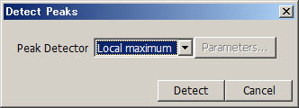
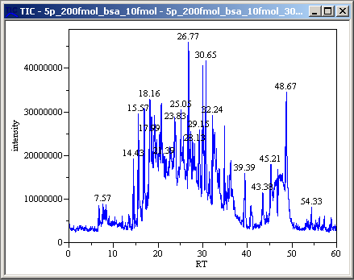

While a chromatogram is displayed, select [Processing] in the menu bar and then select [Peaks] > [Peak Detection] from the drop down menu.
The Peak Detection dialog appears.
The Peak Detection dialog can also be displayed by clicking the
 icon in the toolbar.
icon in the toolbar.
Set the parameters.
Click [OK].
The RT value of each detected peak appears.
